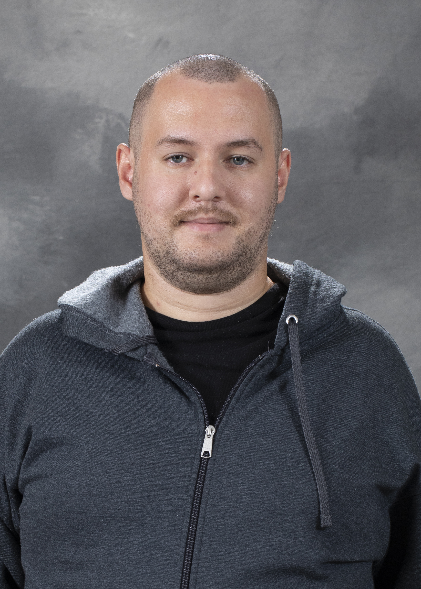

My research lies at the intersection of algebraic geometry, finite fields, and combinatorics, with connections to cryptography, finite geometry, and cohomology theory. I am particularly interested in how geometric methods reveal the structure of algebraic and combinatorial objects, and how these connections can be used to address questions about polynomial factorization, rational points, and maps over finite fields. A central focus of my work is the absolute irreducibility of multivariate polynomials and its applications to almost perfect nonlinear (APN) functions and permutation polynomials. I study how the geometry of the associated algebraic varieties, together with the arithmetic of finite fields, constrains the behavior of these functions. This includes developing criteria for absolute irreducibility and investigating the relationship between polynomial factorization and properties relevant to cryptography. I am also interested in computational approaches to the classification of hypersurfaces over finite fields and the study of their rational points and zeta functions. More broadly, my interests extend to geometric structures arising from combinatorial objects and to the role of cohomological methods in understanding their properties. I am exploring connections among Hodge theory, rational homotopy theory, and loop spaces, particularly the extent to which structures familiar from Kähler geometry admit analogues in these settings. Across these directions, my work combines theoretical investigation with explicit computation, guided by the interplay among geometry, arithmetic, and algebra.

Department of Mathematics
Purdue University
Email:
cagrinso@purdue.edu
I am a Ph.D. student working at the intersection of algebraic geometry, topology, and combinatorics.
Studying multivariate symmetric polynomials and their factorizations through the geometric structure of the singularities of their leading forms.
Exploring relaxed Kähler package structures on loop spaces and their connections to combinatorial problems.
View full list on Google Scholar
Feel free to reach out regarding research collaborations, talks, or academic discussions.
Email Me